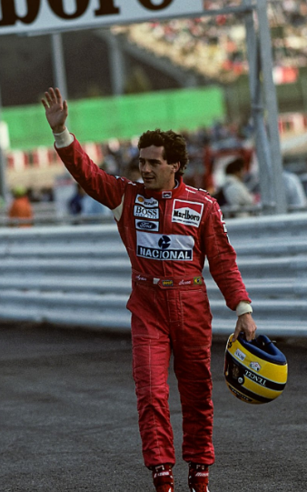

Nascido em 21 de março de 1960, no Brasil, é um dos pilotos mais carismáticos e talentosos da história da Fórmula 1. Senna conquistou 3 campeonatos mundiais e é lembrado por sua habilidade excepcional em condições de pista molhada e por sua intensa rivalidade com Alain Prost. Sua morte trágica em 1994 durante uma corrida em Imola deixou um legado duradouro na F1.